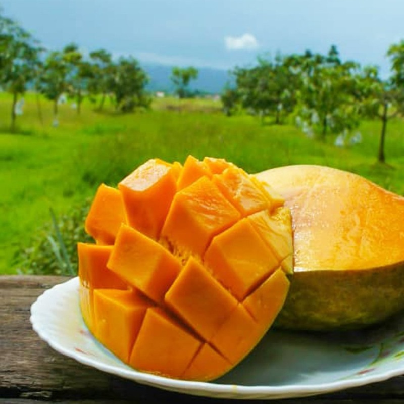
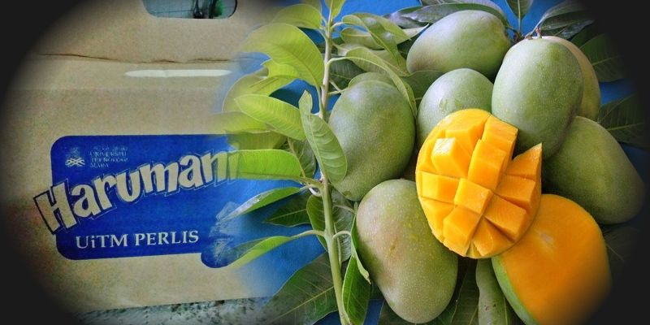

About Harumanis Mangoes
Harumanis mangoes are a specialty of UiTM Perlis, known for their sweet and aromatic flavor. These mangoes are a seasonal fruit, typically available between April and June.
The perfectly ripe Harumanis mango has a golden-yellow color with a slight green. Its flesh is fiber-free and exceptionally sweet.

Harumanis mango trees are carefully cultivated in UiTM Perlis, where the climate and soil conditions are perfect for growing these fruits.

Each Harumanis mango is hand-picked at the right ripeness to ensure the best quality and taste for our customers.
Health Benefits of Harumanis Mangoes
- Rich in vitamins A and C, essential for immune system function and skin health
- High in antioxidants that help protect cells from damage
- Contains dietary fiber for improved digestion and gut health
- Natural source of energy with beneficial complex carbohydrates
- Low in calories while being nutrient-dense